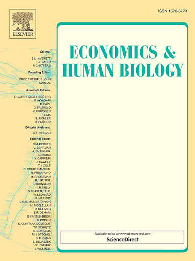

Research研究研究연구研究
Publications出版物出版物출판물出版物
-
2026

Permanent Income Shocks and Suicidal Ideation: Evidence from South Korea永久收入冲击与自杀意念:来自韩国的证据永久收入衝擊與自殺意念:來自韓國的證據영구소득 충격과 자살 생각: 한국의 증거恒常所得ショックと自殺念慮:韓国からの証拠Who falls into suicidal ideation when income drops? Drawing on the Korea Welfare Panel Study covering 2011 to 2023 and decomposing income into permanent and transitory components, I find the answer is highly concentrated. Transitory income fluctuations leave ideation almost unchanged, while permanent declines are associated with strong and durable increases in ideation, extending the permanent income logic to mental health. Households suffering persistent income declines and renters or the initially poor bear nearly all of the cost: renters carry a gradient roughly five times that of homeowners, and the initially poor several times that of the better-off. Material hardship and depressive symptoms together absorb the bulk of the income-ideation link. Administrative regional records on suicide deaths reproduce the negative income gradient and reveal a pooled male mortality response about six times the female one, even though ideation itself is more prevalent in women, a layered cognition-behaviour pattern with sex-symmetric thoughts but male-predominant lethality. The income-to-ideation gradient is markedly steeper among heavier problem-drinkers: an alcohol-disinhibition effect that operates across both sexes at the cognitive level, while the step from ideation to lethal behaviour falls predominantly on men. Together the results identify housing tenure and initial deprivation as the pressure points along which the income-mental-health gradient bites, and where social protection has the greatest scope to act.
Keywords: Suicidal ideation, Permanent income, Mental health, Korea Welfare Panel Study, Material hardship, Housing tenure
JEL classification: I12, I14, I32, D31
Wang, P. (2026). Permanent income shocks and suicidal ideation: Evidence from South Korea. Economics & Human Biology, 101625. https://doi.org/10.1016/j.ehb.2026.101625当收入下降时,谁会陷入自杀意念?基于覆盖 2011 至 2023 年的韩国福利面板研究(Korea Welfare Panel Study),并将收入分解为永久性与暂时性两部分,我发现答案高度集中。暂时性收入波动几乎不改变自杀意念,而永久性收入下降则与自杀意念强烈且持久的上升相关联,将永久收入理论延伸至心理健康领域。承受持续性收入下降的家庭,以及租房者或初始贫困者,承担了几乎全部代价:租房者的梯度约为自有住房者的五倍,初始贫困者则为较富裕者的数倍。物质困难与抑郁症状共同吸收了收入—自杀意念关联的绝大部分。区域行政层面的自杀死亡记录再现了负向收入梯度,并揭示合并样本中男性死亡率反应约为女性的六倍,尽管自杀意念本身在女性中更为普遍——这是一种思维上性别对称、但致死性以男性为主的分层"认知—行为"模式。收入—自杀意念梯度在问题饮酒较严重者中明显更陡:这是一种酒精去抑制效应,在认知层面对两性都起作用,而从意念到致命行为的跨越则主要落在男性身上。总体而言,研究结果将住房产权与初始贫困识别为收入—心理健康梯度发挥作用的压力点,也是社会保障最具发挥空间之处。
关键词:自杀意念、永久收入、心理健康、韩国福利面板研究、物质困难、住房产权
JEL 分类:I12, I14, I32, D31
Wang, P. (2026). Permanent income shocks and suicidal ideation: Evidence from South Korea. Economics & Human Biology, 101625. https://doi.org/10.1016/j.ehb.2026.101625當收入下降時,誰會陷入自殺意念?基於涵蓋 2011 至 2023 年的韓國福利面板研究(Korea Welfare Panel Study),並將收入分解為永久性與暫時性兩部分,我發現答案高度集中。暫時性收入波動幾乎不改變自殺意念,而永久性收入下降則與自殺意念強烈且持久的上升相關聯,將永久收入理論延伸至心理健康領域。承受持續性收入下降的家庭,以及租屋者或初始貧困者,承擔了幾乎全部代價:租屋者的梯度約為自有住房者的五倍,初始貧困者則為較富裕者的數倍。物質困難與憂鬱症狀共同吸收了收入—自殺意念關聯的絕大部分。區域行政層面的自殺死亡記錄再現了負向收入梯度,並揭示合併樣本中男性死亡率反應約為女性的六倍,儘管自殺意念本身在女性中更為普遍——這是一種思維上性別對稱、但致死性以男性為主的分層「認知—行為」模式。收入—自殺意念梯度在問題飲酒較嚴重者中明顯更陡:這是一種酒精去抑制效應,在認知層面對兩性都起作用,而從意念到致命行為的跨越則主要落在男性身上。總體而言,研究結果將住房產權與初始貧困識別為收入—心理健康梯度發揮作用的壓力點,也是社會保障最具發揮空間之處。
關鍵詞:自殺意念、永久收入、心理健康、韓國福利面板研究、物質困難、住房產權
JEL 分類:I12, I14, I32, D31
Wang, P. (2026). Permanent income shocks and suicidal ideation: Evidence from South Korea. Economics & Human Biology, 101625. https://doi.org/10.1016/j.ehb.2026.101625소득이 감소할 때 누가 자살 생각에 빠지는가? 2011년부터 2023년까지의 한국복지패널조사(Korea Welfare Panel Study)를 활용하고 소득을 영구적 요소와 일시적 요소로 분해한 결과, 그 답은 매우 집중되어 있음을 발견한다. 일시적 소득 변동은 자살 생각을 거의 변화시키지 않는 반면, 영구적 소득 감소는 자살 생각의 강하고 지속적인 증가와 연관되어 있어, 영구소득 논리를 정신건강 영역으로 확장한다. 지속적인 소득 감소를 겪는 가구, 그리고 세입자나 초기 빈곤층이 비용의 거의 전부를 부담한다. 세입자의 기울기는 자가 보유자의 약 다섯 배, 초기 빈곤층은 부유층의 여러 배에 달한다. 물질적 어려움과 우울 증상이 함께 소득–자살 생각 연결의 대부분을 흡수한다. 자살 사망에 관한 지역 행정 기록은 음(–)의 소득 기울기를 재현하며, 자살 생각 자체는 여성에게서 더 흔함에도 불구하고 통합 표본에서 남성 사망률 반응이 여성의 약 여섯 배로 나타난다. 이는 생각은 성별 대칭적이지만 치명성은 남성에게 집중되는 층위적 '인지–행동' 패턴이다. 소득–자살 생각 기울기는 문제 음주가 심한 집단에서 뚜렷하게 더 가파르다. 이는 인지 수준에서 양성 모두에게 작용하는 알코올 탈억제 효과인 반면, 자살 생각에서 치명적 행동으로의 이행은 주로 남성에게 집중된다. 종합하면, 연구 결과는 주거 점유 형태와 초기 결핍을 소득–정신건강 기울기가 작동하는 압력 지점이자 사회적 보호가 가장 크게 작용할 수 있는 지점으로 식별한다.
키워드: 자살 생각, 영구소득, 정신건강, 한국복지패널조사, 물질적 어려움, 주거 점유 형태
JEL 분류: I12, I14, I32, D31
Wang, P. (2026). Permanent income shocks and suicidal ideation: Evidence from South Korea. Economics & Human Biology, 101625. https://doi.org/10.1016/j.ehb.2026.101625所得が減少するとき、誰が自殺念慮に陥るのか。2011年から2023年までの韓国福祉パネル調査(Korea Welfare Panel Study)を用い、所得を恒常的要素と一時的要素に分解した結果、その答えは著しく集中していることがわかった。一時的な所得変動は自殺念慮をほとんど変化させない一方、恒常的な所得減少は自殺念慮の強く持続的な増加と関連しており、恒常所得の論理を精神保健の領域へと拡張する。持続的な所得減少に直面する世帯、そして借家人や当初から貧困層にある人々が、そのコストのほぼすべてを負担する。借家人の勾配は持ち家保有者の約5倍、当初貧困層は富裕層の数倍に達する。物質的困窮と抑うつ症状が、所得と自殺念慮の関連の大部分を吸収する。自殺死亡に関する地域行政記録は負の所得勾配を再現し、自殺念慮自体は女性でより多くみられるにもかかわらず、統合標本において男性の死亡反応が女性の約6倍であることを示す。これは、思考は性別に対称的でありながら致死性は男性に偏るという、階層的な「認知—行動」パターンである。所得から自殺念慮への勾配は、問題飲酒が重い層で著しく急峻となる。これは認知の水準で両性に作用するアルコールの脱抑制効果である一方、自殺念慮から致死的行動への移行は主に男性に集中する。総じて、本研究の結果は、住宅の保有形態と初期の剥奪を、所得と精神保健の勾配が強く作用する圧力点であり、社会的保護が最も大きく作用しうる地点として特定する。
キーワード: 自殺念慮、恒常所得、精神保健、韓国福祉パネル調査、物質的困窮、住宅の保有形態
JEL 分類: I12, I14, I32, D31
Wang, P. (2026). Permanent income shocks and suicidal ideation: Evidence from South Korea. Economics & Human Biology, 101625. https://doi.org/10.1016/j.ehb.2026.101625
Working Papers工作论文工作論文워킹 페이퍼ワーキングペーパー
- Survival Pessimism: Causal Evidence from Korean War Cohorts生存悲观主义:来自朝鲜战争的因果证据生存悲觀主義:來自韓戰的因果證據생존 비관주의: 한국전쟁의 인과적 증거生存悲観主義:朝鮮戦争からの因果的証拠 · Under Review评审中審查中심사 중査読中
- The Macroprudential Household Waterbed: LTV Limits and Unsecured Debt宏观审慎的家庭水床效应:LTV上限与无抵押债务宏觀審慎的家庭水床效應:LTV上限與無擔保債務거시건전성의 가계 워터베드 효과: LTV 규제와 무담보 대출マクロプルーデンスの家計ウォーターベッド効果:LTV規制と無担保債務
- Insurance or Head Tax? Evidence from Korea’s Health-Insurance Mandate for International Students保险还是人头税?来自韩国留学生健康保险强制参保的证据保險還是人頭稅?來自韓國留學生健康保險強制納保的證據보험인가 인두세인가? 한국 유학생 건강보험 의무가입의 증거保険か人頭税か?韓国の留学生健康保険義務化からの証拠
- Mobility Undiminished, Incidence Regressive: Evidence from Korea’s Rent Control流动性未减,负担累退:来自韩国租金管制的证据流動性未減,負擔累退:來自韓國租金管制的證據이동성은 유지, 부담은 역진적: 한국 임대료 규제의 증거移動性は不変、負担は逆進的:韓国の家賃規制からの証拠
- Silence in the Heatwave: Metered Cooling Deprivation amid Near-Universal Air-Conditioning热浪中的沉默:近乎普及的空调下的计量制冷剥夺熱浪中的沉默:近乎普及的空調下的計量製冷剝奪폭염 속의 침묵: 에어컨이 거의 보편화된 가운데의 계량 냉방 박탈熱波の中の沈黙:エアコンがほぼ普及する中での計量冷房剥奪
- The Hidden Incidence of a Fuel-Tax Cut: Ownership, Fuel, and Redistribution燃油税减免的隐性归宿:所有权、燃料与再分配燃油稅減免的隱性歸宿:所有權、燃料與再分配유류세 인하의 숨은 귀착: 소유, 연료, 재분배燃料税減税の隠れた帰着:保有・燃料・再分配
- Housing Inheritance and Son Preference: Evidence from Taiwan住房继承与重男轻女:来自台湾的证据住房繼承與重男輕女:來自臺灣的證據주택 상속과 남아 선호: 대만의 증거住宅相続と男児選好:台湾からの証拠
- Does Workplace AI Exposure Broaden or Concentrate Prosocial Behavior? Evidence from Taiwan职场AI暴露会扩大还是集中亲社会行为?来自台湾的证据職場AI暴露會擴大還是集中親社會行為?來自臺灣的證據직장 내 AI 노출은 친사회적 행동을 확장하는가 집중시키는가? 대만의 증거職場のAI暴露は向社会的行動を広げるか集中させるか?台湾からの証拠
- Targeting, Receipt, and Tax-Burden Salience: Evidence from Korea’s EITC靶向、受益与税负显著性:来自韩国劳动所得税抵免(EITC)的证据靶向、受益與稅負顯著性:來自韓國勞動所得稅抵免(EITC)的證據타겟팅, 수급, 조세부담 현저성: 한국 근로장려세제(EITC)의 증거ターゲティング、受給、租税負担の顕著性:韓国の勤労所得税額控除(EITC)からの証拠
- Out of Sight, Cleaner? Digitally Mediated Remote Work and Korea’s Bureaucratic Integrity Climate眼不见,心不烦?数字化远程办公与韩国官僚机构的廉洁氛围眼不見,心不煩?數位化遠端工作與韓國官僚機構的廉潔氛圍눈에서 멀어지면 더 청렴해지는가? 디지털 매개 원격근무와 한국 관료의 청렴성 풍토見えなければ清廉か?デジタル媒介のリモートワークと韓国官僚の廉潔性風土
Work in Progress进行中的研究進行中的研究진행 중인 연구進行中の研究
- Heeding Celestial Omens应天兆應天兆천상의 징조에 응하여天の兆しに応じて